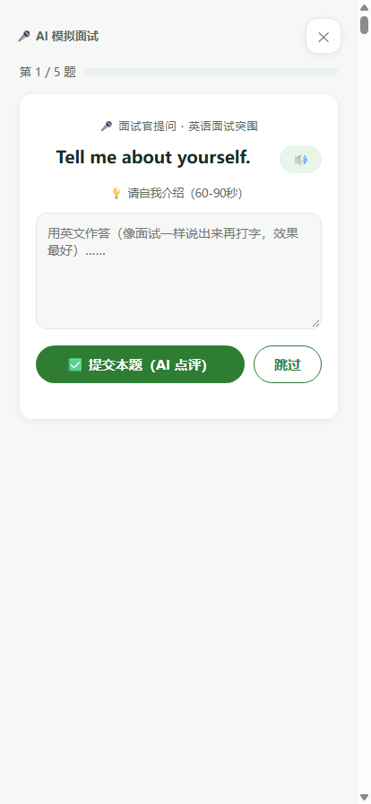
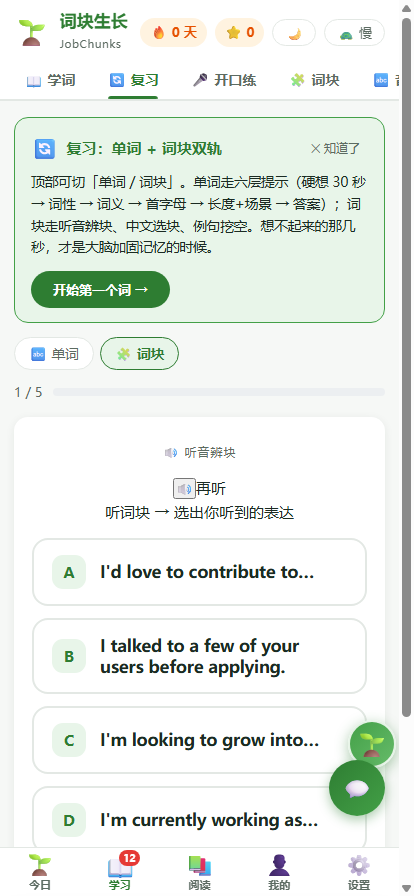
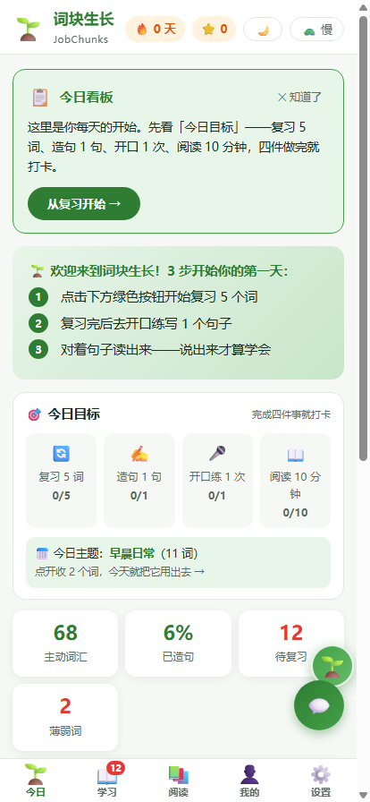

如果这些你也经历过，那你找对地方了
单词书背了 20 遍，真到面试和邮件里，还是拼不出一句完整的地道表达。语言不是单词堆出来的，是词块装出来的。
岗位写着"英语作为工作语言"，面试有英文口测——没人陪你练，也不知道练什么。对着镜子练一百遍，不如 AI 面试官陪你过五题。
不知道目标岗位到底需要什么英语。学的和考的脱节，越学越焦虑。其实答案就写在招聘 JD 里。
以真实招聘画像为骨架，词块为原子的学习闭环：学 → 复 → 用 → 读
面试突围 / 跨境电商 / 出海业务，
按目标岗位选赛道
场景里真实在用的多词表达，
例句+易错点+跟读，20条/场景
听懂（听音辨块）·看懂（例句挖空）
·说出来（开口练评分）
JD 分析器定制计划，
AI 面试官模拟实战出报告
词块（Lexical Chunk）教学法有完整实证：词块记忆直接提升口语流利度与听力识别速度。整套产品的第一批学习数据来自「英语自学建设系统」（Hermes）真实自学资产——不是拍脑袋设计的功能清单。
从选方向到拿 offer，每一环都有工具
把目标岗位的 JD 贴进来，AI 拆出 10 条高频词块和 3 道面试考题，生成专属学习计划——"以招聘为目标"不是口号，是产品机制。词块一键收进说法库，配合造句练习形成闭环。
5 道真题逐题作答，AI 面试官按切题度、词块使用、地道度打分点评，还给你"更地道的说法"。答完生成能力报告——面试前练三轮，上场不慌。你的 JD 考题会自动插入面试流程。

面试突围、跨境电商、出海业务三条赛道，每个场景 20 条真实岗位在用的词块：例句、中文、易错点、双发音。自测模式遮住例句，看中文回想——先听懂看懂，再说出来。

单词走六层分层抢救（硬想 30 秒 → 词性 → 词义 → 首字母 → 长度场景 → 答案），词块走听音辨块、中文选块、例句挖空三题型。连绿间隔自动拉长（3→7→14→30 天），记住的不打扰，忘了的天天见。

造句、填空、关键词造句、开口说四种练法，提交立刻打分纠错——写错也是生产模式。
137 册书虫分级读物免费下载，长按生词出词义发音，一键收进词库带原句回炉。
免费大模型陪聊教词、48 音标口诀打地基、"你想说的话→老外的说法"积累库。
不需要信任我们的服务器，因为数据压根不在服务器上
是。词块库、复习、阅读、开口练、JD 分析、模拟面试全部免费可用，无广告。AI 功能每天有免费额度，解锁后不限。
数据保存在你手机本地。覆盖安装新版本不会丢数据；换手机前用「设置 → 数据 → 导出备份」导出 JSON 文件，在新手机导入即可。
不用。词库、复习、阅读全部离线可用；联网只在 AI 功能、发音评分和检查更新时需要。
它们解决"认识单词"，词块生长解决"用英语找到并做好一份工作"：以真实岗位 JD 为目标，词块为原子，AI 面试官验收——学的就是考的。
能。词块标注了 CEFR 等级（A2-C1），从简单表达起步；内置 4179 牛津分级词库随时补单词零件。先跟读、再自测、后实战，循序渐进。
不麻烦。打开应用时自动在应用内静默完成更新（有进度条），全程不用跳出应用，数据不会丢。